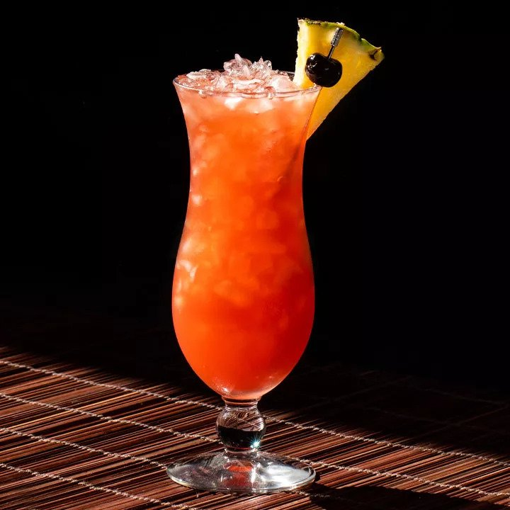

Back to index
Rum Runner

A tropical cocktail with rum, banana liqueur and grenadine
This recipe is a bit less saccharine and more sophisticated than many others, since it
eschews the spiced and coconut-flavored rums you’ll sometimes see and opts for lime juice
over orange. But really, you should feel free to tweak this drink in any way you like,
including playing with ingredients and proportions. There’s no real wrong way to make a
Rum Runner, as long as you come up with something you enjoy drinking.
Ingredients
- 1 ounce light rum
- 1 ounce navy-strength rum
- 1 ounce banana liqueur (such as Giffard Banane du Bresil)
- 1/2 ounce blackberry liqueur (such as Giffard Creme de Mure)
- 2 ounces pineapple juice
- 1 ounce lime juice, freshly squeezed
- 1/2 ounce grenadine
- Garnish: brandied cherry
- Garnish: pineapple wedge
Steps
- Add the light rum, navy-strength rum, banana liqueur, blackberry liqueur,
pineapple juice, lime juice and grenadine into a shaker with ice and shake until well-chilled.
- Strain into a hurricane glass filled with crushed ice.
- Garnish with a skewered brandied cherry and pineapple wedge.
Back to index